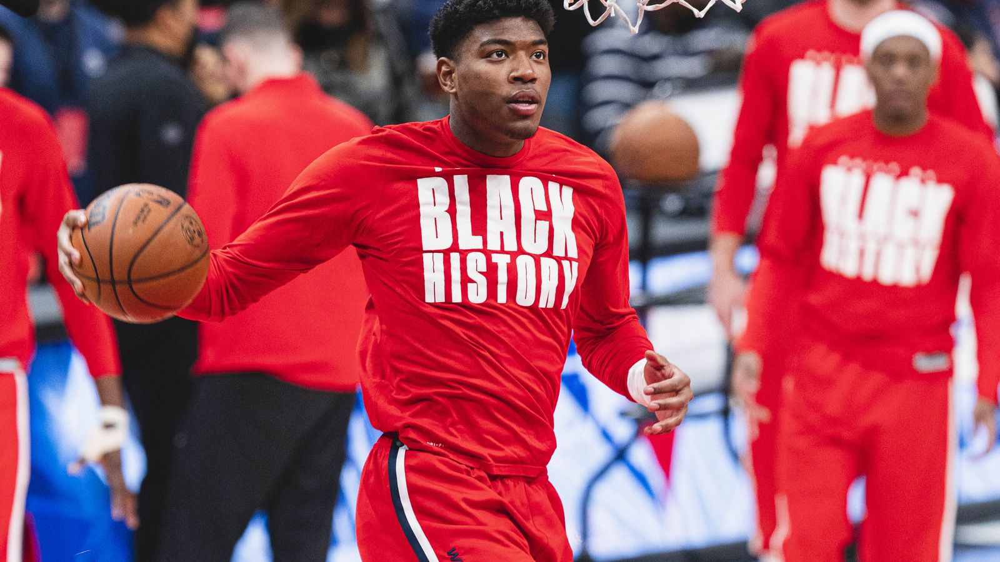

同じ街で、新しいユニフォームを —— 八村塁、クリッパーズと2年2800万ドルで契約合意
「Just in: Free agent Rui Hachimura has agreed to a two-year, $28 million deal to sign with the Los Angeles Clippers, sources tell ESPN.」——FAの八村塁が、ロサンゼルス・クリッパーズと2年2800万ドルの契約に合意した。Shams Charania（ESPN）が日本時間7月7日、自身のXで一報を伝えた。

サイン&トレードは、成立しなかった
Shamsは続くポストで経緯にも触れている。八村と代理人ダーレン・マツバラ（THE•TEAM）は、FA解禁の早い段階でクリッパーズと契約への共通認識に達していた。両者はレイカーズがオフシーズンの補強を終えるのを待ってサイン&トレードでの移籍を模索したが、レイカーズは合意に応じなかった。クリッパーズ側の提示が最小限の現金にとどまる一方、レイカーズはドラフト資産のリターンを求めていたとみられる。
望んだのは、ロサンゼルスに残ること
結果として八村はFA契約でクリッパーズへ。2023年1月にウィザーズからレイカーズへ移籍して以来プレーしてきたロサンゼルスに、チームを替えて残る形になった。複数チームが関心を示すなかで、八村自身がLA残留を望んだと報じられている。
湖から、船へ
レイカーズの一員として同じ街のライバルだったチームが、次の職場になる。ホームアリーナはクリッパーズが2024年から本拠地とするイントゥイット・ドームへ。同じ街の、対岸へと渡る移籍——日本人フォワードのキャリアは、新しい章に入る。
出典: Shams Charania（ESPN）のXポスト（2026年7月6日・現地時間）
https://x.com/ShamsCharania/status/2074153176056352874
https://x.com/ShamsCharania/status/2074153520874274919